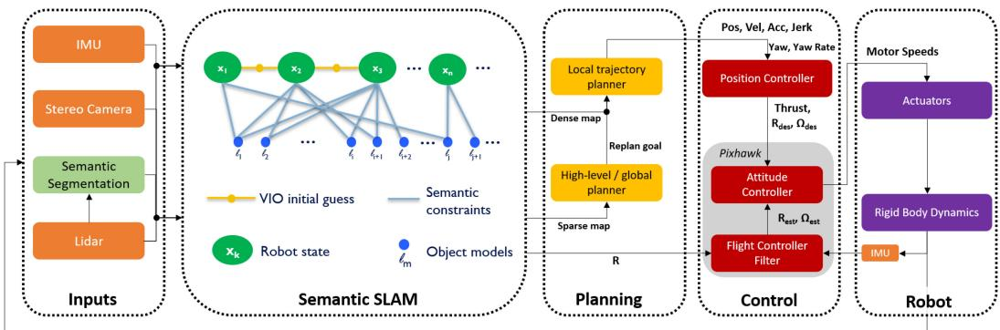
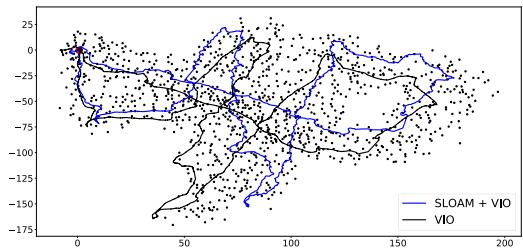

这张图在画什么：把这篇论文放到七环系统链上，一格一格判断它有没有实体工作。除了最左边的传感器（灰色），其余六格全是实心；每格下面还写了它在这一格具体做了什么。 怎么看这张图：① 先数实心格——从感知一直到执行器，六环，这是本季覆盖最满的一篇；② 看灰色那一格：它用传感器、也做了最完整的传感器选型论证，但不改进传感器本身，所以涂灰；③ 看第 ⑦ 格：全季只有这一篇真正落到了执行器（把控制指令交给飞控，最后变成电机转速）；④ 看第 ③ 格下面那行小字，那是这篇论文最诚实的自我限制。 要记住的一句话：它不是「一篇用了 SLAM 的论文」，而是一台把 SLAM 焊进飞行回路的机器——SLAM 在它内部，不在它上游。
这里要顺带补一个被文件名切掉的关键信息：这篇的完整标题是 Large-Scale Autonomous Flight With Real-Time Semantic SLAM Under Dense Forest Canopy。「树冠下」这三个词不是装饰，它是全篇所有技术选择的出发点——为什么用激光雷达、为什么要压漂移、为什么地图要分三层，全都从这三个词长出来。
原图注（Fig. 2）：Area where the experiments were performed (Wharton State Forest). The left panel is a view from an over-canopy UAV, which shows the scale of the environment and the thick tree canopy; The middle panel is a view from an under-canopy UAV, which illustrates that the environment is highly unstructured and cluttered; The right panel shows that the ground is covered by undergrowth which moves with the wind and is unevenly illuminated. These factors cause traditional VIO or LIDAR odometry systems to drift over time.（实验场地：美国新泽西州 Wharton State Forest。左panel是冠层之上的无人机视角，展示环境尺度与厚实的树冠；中间panel是冠层之下的视角，说明环境高度非结构化、杂乱；右panel显示地面被灌木覆盖，灌木随风移动且光照不均匀。这些因素导致传统的 VIO 或激光里程计随时间漂移。） 怎么看这张图：① 左panel一眼看出「冠层有多厚」——这正是「树冠下」这个题眼的地理来源；② 中间panel是重点：树干密密麻麻、没有规则结构，这解释了为什么「几何特征会失效」；③ 右panel看地面：它既不平整、又明暗不均、还在动——三条原因在这一格里物理性地同时出现。把这三张对照着看，就能理解为什么这篇论文要费那么大功夫去压漂移。 要记住的一句话：这片林子约 122,880 英亩，而论文说它「树密度、尺寸、形状和灌木状况都有显著变化」——这正是选它做实验场的理由：它够难。
2. 这台机器：Falcon 4 的零件清单
接下来把这台机器拆开看。它是一台自制碳纤维机架的四旋翼，载荷（含电池）约 3 kg，用一块 17,000 mAh 的锂离子电池，在全部传感器和机载电脑都开着的状态下能飞约 30 分钟，总重 4.2 kg。
原图注（Fig. 1）：Falcon 4 UAV platform. Our Falcon 4 platform used for this work is the successor of our Falcon 450 platform [1] and is equipped with a 3D LiDAR, an Open Vision Computer (OVC) 3 [2] which has a hardware synchronized IMU and stereo cameras, an Intel NUC onboard computer, and a Pixhawk 4 flight controller. The platform has a total weight of 4.2 kg and a 30-minute flight time.（Falcon 4 无人机平台，是 Falcon 450 的后继机型。配备三维激光雷达、一台带硬件同步 IMU 与双目相机的 Open Vision Computer（OVC）3、一台 Intel NUC 机载电脑，以及一个 Pixhawk 4 飞控。整机总重 4.2 kg，续航 30 分钟。） 怎么看这张图：① 对照图注数零件：激光雷达、带双目相机与 IMU 的 OVC 3、Intel NUC 机载电脑、Pixhawk 4 飞控——这四样东西恰好对应系统链的第 ① 环（传感器）、第 ③ 环（算力）和第 ⑥⑦ 环（控制与执行）；② 盯着装在机腹的那一块：激光雷达放在下方，是为了拿到尽量多的地面与树干回波；③ 记住 4.2 kg 与 30 分钟这一对数字——后面所有关于「续航才是主约束」的结论都建立在这两个数上。 要记住的一句话：这台机器上没有任何一个部件是「为了做实验临时加的」，每一个都对应链上的一格——这就是「整机系统」这四个字的分量。

原图注（Fig. 3）：Software architecture. The system uses information from multiple sensors including 3D LIDAR, stereo cameras, and an IMU. It first detects objects in LiDAR scans using RangeNet++ [17]. Object detections are then tracked across the data sequence. This semantic data association is converted into constraints on both the robot poses as well as the object landmark models using the semantic SLAM module, where the relative motion estimated by a stereo VIO algorithm [18] is used as an initial guess, and SLOAM [16] is used to further optimize the UAV pose and landmarks. The output of the semantic SLAM module is used to reduce the odometry drift through a drift-compensation mechanism. This information is then used by the planning module in real-time. The high level planner uses a boustrophedon-based coverage planning algorithm [19] to cover a polygon region. The mid-level global planner relies on a sparse map to plan the shortest collision-free path to each coverage waypoint, and the local trajectory planner uses a small but finely discretized robot-centric map to plan a dynamically feasible and collision-free trajectory. Meanwhile, a UKF that runs at 200 Hz is used for the low-level control loop.（软件架构：多传感器输入 → 用 RangeNet++ 做点云目标检测 → 跨序列跟踪 → 语义 SLAM 模块把语义数据关联转成对位姿和地标模型的约束（VIO 估的相对运动用作初值，SLOAM 进一步优化位姿与地标）→ 漂移补偿模块 → 交给规划模块实时使用。规划分三层：往复式覆盖规划 → 中层全局规划（稀疏地图、最短避障路径）→ 局部轨迹规划（以机器人中心的小而细的图）；同时有一个 200 Hz 的 UKF 跑在底层控制回路。） 怎么看这张图：① 这张图就是论文自己画的系统链，对照我们那条七环链读，你会发现它把「感知 → SLAM → 地图 → 规划 → 控制」全部画在一张图里；② 顺着箭头找那条最关键的支路：语义 SLAM → 漂移补偿 → 规划，这条支路就是下一节的主角；③ 注意规划模块被明确分成三层（覆盖 / 全局 / 局部），三层的频率和地图精度都不同；④ 最后看那个 200 Hz 的 UKF——它是控制回路的节拍器，也是「平滑位姿」的来源。 要记住的一句话：这是全季唯一一张把整条链画在一张图上的原文图；后面几节课讲的论文，都只覆盖这张图里的一小块。
天真的做法是什么？直接把 SLOAM 的位姿喂给规划器和控制器。原文明确说了这样会出什么事，而且讲得特别具体：无人机已经在跟踪一条轨迹了，位姿突然被拉一下，它就会偏离现有轨迹；一偏离，之前为了加速重规划而缓存的运动原语图就不能再复用了，于是重规划时间变得很长；而重规划期间没有可跟踪的轨迹，无人机就处于危险状态。这一串因果链，是「为什么不能直接把 SLAM 输出接进控制回路」最完整的解释。
它的解法是：让 SLAM 系和 odometry 系同时存在，谁也不替谁，只把两者的「差值」搬进回路。
原图注（Fig. 5）：Visualization of real-time perception and decision making of the autonomy stack in a real-world forest. The green cylinders are tree models estimated by SLOAM, the small bounding box is the local voxel map, and the black line shown at the top of the middle panel is the edge of the global voxel map (1 km × 1 km × 10 m). The left panel shows a zoomed-in view of the SLAM and odometry reference frames. The VIO and SLOAM estimated poses are used to calculate a transform between the two reference frames, which compensates the VIO drift. In the right panel, the drift compensation is used by the planning module to output trajectories that guide the UAV to execute its mission accurately.（真机森林中整套自主系统实时感知与决策的可视化。绿色圆柱是 SLOAM 估计的树模型，小方框是局部体素图，中间panel顶部那条黑线是全局体素图的边界（1 km × 1 km × 10 m）。左panel是 SLAM 参考系与里程计参考系的放大视图：用 VIO 与 SLOAM 各自的位姿算出两个参考系之间的变换，用来补偿 VIO 漂移。右panel中，漂移补偿被规划模块使用，输出轨迹引导无人机准确执行任务。） 怎么看这张图：① 这是上一段那张自绘图的原图版本——左边一格正是「两个参考系」的现场截图，可以拿来对照印证；② 看那些绿色圆柱：它们就是这篇论文的「地图」真身——一棵树一个圆柱，而不是一团点云；③ 看中间那个小方框和它上方那条黑线：小方框是局部细体素图，黑线是 1 km × 1 km × 10 m 的全局粗体素图边界，两者的尺度差在画面上一眼可见；④ 最右一格是补偿之后的规划输出，也就是「交给下游」那一步。 要记住的一句话：从「两套坐标系的差」到「规划器输出的轨迹」，这条链路在一张真机截图里从头到尾都在——它不是概念图，是运行时画面。
4. 三层地图：2 MB 与 1250 MB
这一节讲的是这篇论文在「地图」这一环上的取舍，也是全篇最好记的一对数字。
先说要解决的问题。如果地图只是一张巨大的、均匀精细的体素图，那它就装不下。原文给了一个具体数字：一个 1 km × 1 km 的区域，按 0.1 m 的分辨率存成体素图需要 1250 MB；而全局体素图的实际高度范围是 10 m（也就是 1 km × 1 km × 10 m）。一千多兆的地图，一台 4.2 公斤的无人机是背不动的——不只是存不下，后面做规划、更新它也跑不动。
原图注（Fig. 4）：Semantic map vs voxel map. The green cylinders show the semantic map, the black bounding box shows a local voxel map with a 0.1 m resolution, and the blue curve shows the SLOAM-estimated trajectory. It requires 1250 MB to store such a voxel map for a 1 km × 1 km region. However, storing individual tree models requires ∼2 MB for a dense forest of the same size.（语义地图对比体素地图。绿色圆柱是语义地图，黑色方框是 0.1 米分辨率的局部体素图，蓝色曲线是 SLOAM 估计的轨迹。这样一张体素图存 1 km × 1 km 需要 1250 MB；而存单独的树模型，同样大小的密林只需要约 2 MB。） 怎么看这张图：① 绿色圆柱就是「语义地图」的真身——每一根都对应一棵真树；② 黑框里那一块是局部体素图，注意它的范围相对整个场景有多小，这就是「底层只留周边」的可视化；③ 蓝色曲线是 SLOAM 估出来的轨迹，可以顺着它想象无人机的飞行路线；④ 两个数字（1250 MB 与约 2 MB）就写在图注里，这也是本课最值得记住的一对数字。 要记住的一句话：同一片林子，一边是「一棵树一根圆柱」，一边是「一格一格填满」——差别不在精度，在表示。
原图注（Fig. 6）：Large-scale coverage experiment. The upper left panel shows the overhead LiDAR data of a 0.77 km² forest stand that is used to create the simulated environment. The upper right panel shows the automatically generated coverage plan based on a user-defined coverage region. The UAV is able to finish this mission autonomously within 1 h, without any human intervention. The trajectory length is ∼10 km and the average flight speed is ∼2.9 m/s. The lower left panel shows the semantic map generated by SLOAM consisting of 10,897 tree models, where the semantic segmentation uses the same model as we use for the physical experiments. The lower right panel shows a close-up of the semantic map.（大规模覆盖实验。左上panel是用于构建仿真环境的 0.77 km² 林分冠层激光数据；右上panel是基于用户定义区域自动生成的覆盖计划；无人机在 1 小时内无人工干预自主完成任务，轨迹长约 10 公里、平均速度约 2.9 m/s。左下panel是 SLOAM 生成的含 10,897 个树模型的语义地图，其语义分割使用的模型与真机实验相同；右下panel是语义地图的局部放大。） 怎么看这张图：① 四格按「输入 → 计划 → 结果 → 细节」的顺序读：左上是从真实树林采到的冠层激光数据，右上是一圈圈往复的覆盖路径；② 右上那张路径图是整篇论文任务逻辑的缩影——用户只画了一个多边形，剩下的都是自动的；③ 左下与右下是最终产品：密密麻麻的点，每一个都是一棵被建模成圆柱的树；④ 注意图注最后一句：这个分割模型真机和仿真共用同一个，全程不重训——这是泛化性最硬的一条证据。 要记住的一句话：10 公里、1 小时、2.9 m/s、10897 棵树，全部是在没有 GPS、没有人工干预的仿真密林里跑出来的；而它用的分割模型，训练数据全部来自另一片林子。
关于这个「另一片林子」，值得单独强调，因为它是全文最有说服力的一条细节：分割网络完全没用 Wharton State Forest 的任何标注数据。作者在美国阿肯色州的另一片松林采集数据，只标了 50 帧激光扫描（37 帧训练、13 帧验证）去微调模型，然后在所有实验里全程不重训。参照一下尺度：Wharton State Forest 约 122,880 英亩。用 50 帧、另一片林子的数据，去跑一片 12 万英亩的林场——这就是「泛化」这两个字的实际含义。

原图注（Fig. 9）：Top-down view of the 1.1 km trajectory. In this experiment, the UAV is manually piloted to guarantee returning to take-off position, so that the drift can be quantified. The black dots represent the tree trunks detected by our mapping algorithm.（1.1 公里轨迹的俯视图。这次实验中无人机由人工操控，以保证回到起飞位置，从而可以量化漂移。黑点代表建图算法检测到的树干。） 怎么看这张图：① 先看那条闭合的轨迹——它是人工操控飞出来的，目的就是「精确回到起点」，这样终点离开起点多远就等于累积漂移；② 看那些黑点：每一个黑点都是一棵被检测出来的树干，全程共 1157 棵；③ 这张图没有 GPS 参考（原文说这次实验 GPS 未能锁定），所以它的「真值」是「手动飞回同一点」这个人为约定，不是外部测量——读 Table I 那两个数时一定要带上这个口径。 要记住的一句话：1.1 公里、1157 棵树、总漂移 10.10 米压到 3.99 米——而这里的「米」是起终点位置差，不是整条轨迹的误差。
最后，把这节课和导览课 0199 立的那条链对一次账：这一篇是本季唯一一台自洽闭环的整机系统，也是唯一落到执行器的一篇。下一节课（0201）会换一个完全相反的极端——那篇论文一格都不实现，却把整条链拆开讲清楚了；再下一课（0202）又是另一种：它把 SLAM 整块搬到机外去算。三篇放在一起，你就能看出「系统」这个词在不同论文里有多不一样。